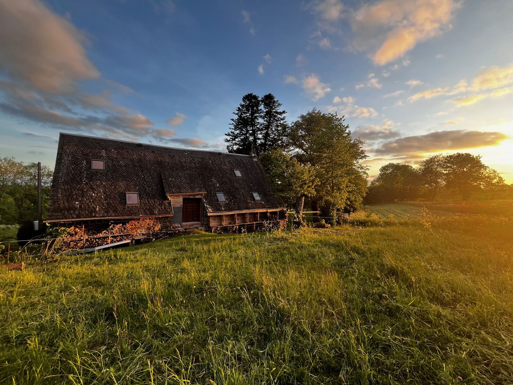
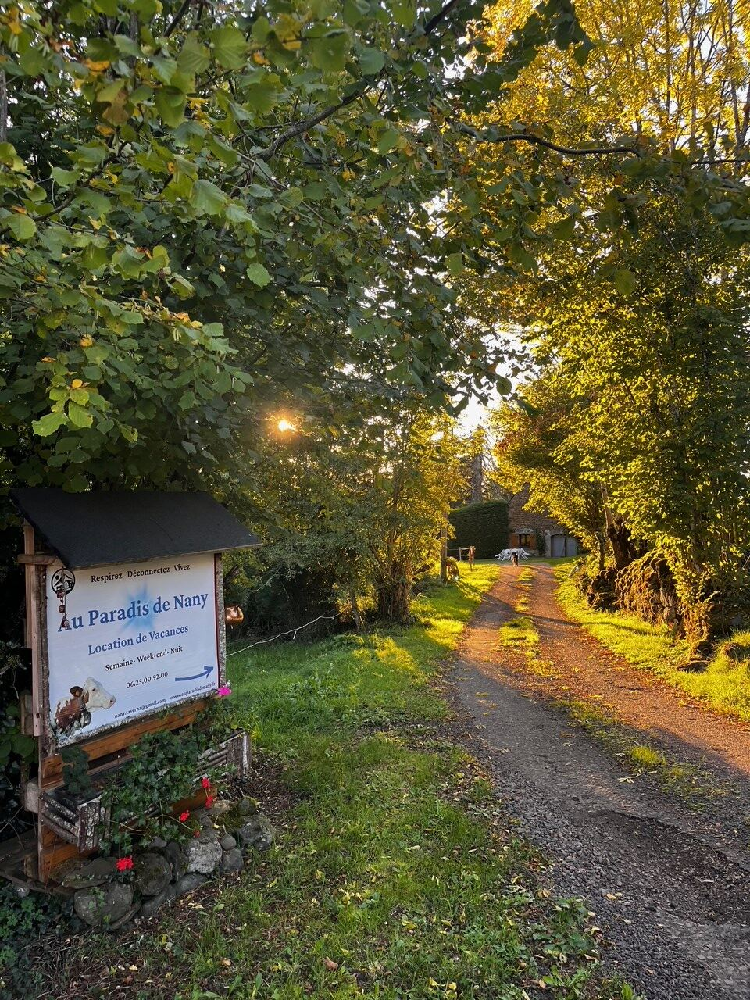
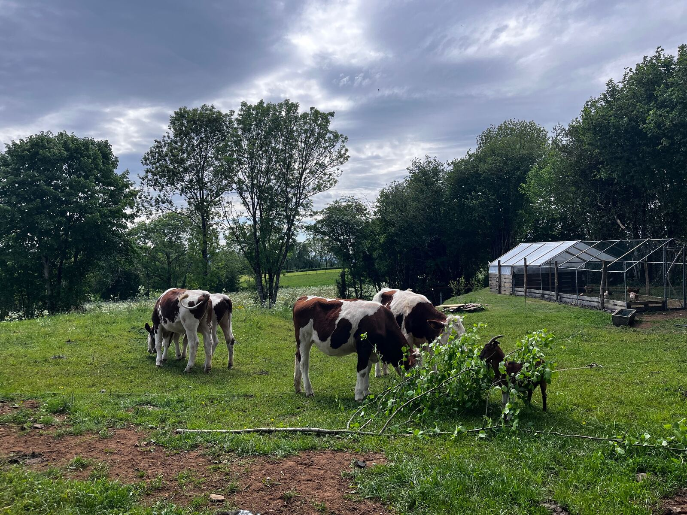
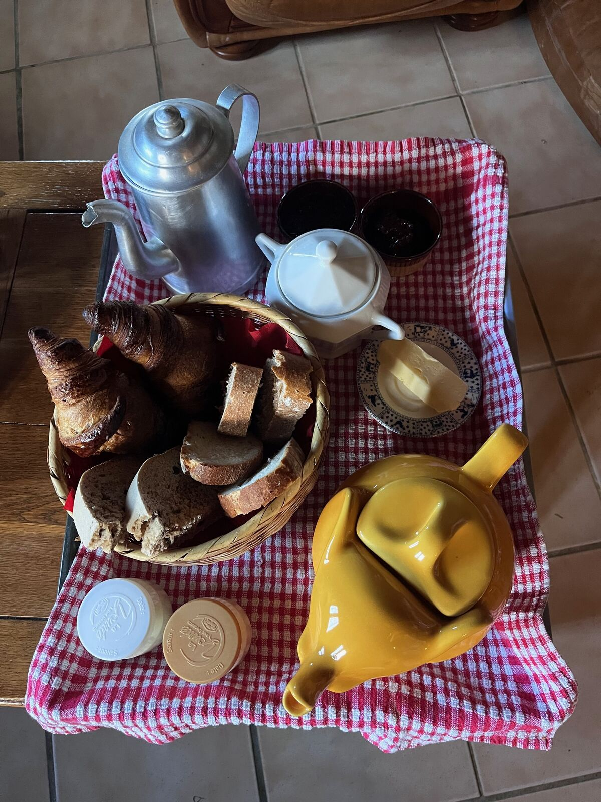

Coup de cœur voyageur
Réservez votre pause à la campagne.
Paiement 100% sécurisé via Airbnb

Respirez. Déconnectez. Vivez.
À Roussières, hameau du village d'Avèze, notre gîte de 60m² vous attend pour un séjour paisible, sans vis-à-vis, à 20 minutes du Sancy et à 4 km de Tauves.
Deux chambres, un grand séjour-cuisine équipé, et tout autour : la nature, la ferme, et le silence de la campagne auvergnate.


Redécouvrez les joies simples de la vie dans un endroit reposant : la traite des vaches le soir, les poules qui grattent la terre, les légumes du jardin. Ici, le temps prend un autre rythme.
Petits et grands découvrent ensemble d'où vient le lait, en soirée.
Confitures, œufs frais, légumes du jardin : le goût des traditions locales.
Chambres spacieuses, cuisine tout équipée, salle d'eau privative. Le calme total, sans vis-à-vis, à 20 minutes du Sancy.
Randonnée, ski, pêche : le Puy de Sancy et ses environs offrent des activités toute l'année, à quelques minutes du gîte.
Truffade maison, spécialités auvergnates, produits de la ferme apportés directement au gîte par Anne-Marie.
Pain de la boulangerie du village, croissants encore chauds, confitures et miel maison : sur demande, chaque matin peut commencer par une table simple et généreuse, avec les produits du jour.

"Séjour agréable au calme dans la nature, proche de plein de bonnes adresses. Excellente communication avec Anne-Marie."
"Une belle surprise le matin : un paysage tout blanc au réveil. Les enfants ont adoré voir les veaux avant notre départ."
"Nous avons pu déguster sa truffade maison, qui était très bonne. Anne-Marie est très sympathique, je recommande."
Paiement 100% sécurisé via Airbnb